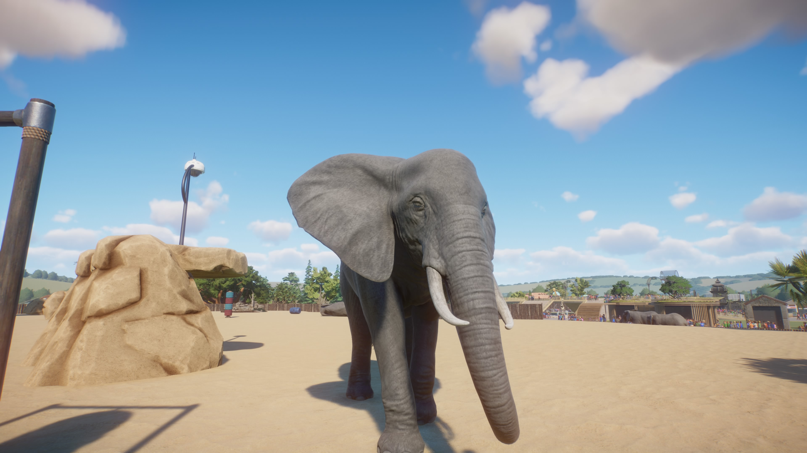

African Savannah Elephant
The giant of the savannah, with an amazing trunk and enormous ears.
Featured AnimalMeet the residents of Finale Zoo! Explore our animals through photographs from online image sources like capybaras,spiders and aardvarks!

The giant of the savannah, with an amazing trunk and enormous ears.
Featured AnimalA lizard famous for its bright blue tongue.
ReptileA giant tarantula from South America.
InvertebrateA fascinating spider native to South America.
InvertebrateA large tarantula with pinkish colouring.
InvertebrateA powerful grazer with an impressive horn.
MammalA colourful rainforest frog with red eyes.
AmphibianA large frog known for its deep call.
AmphibianA slow-moving tree-dweller.
MammalA strong snake that catches prey using its coils.
ReptileA bright yellow butterfly.
Butterfly HouseKnown for eye-like markings on its wings.
Butterfly HouseA striking butterfly native to South Asia.
Butterfly HouseA brilliant blue butterfly from tropical forests.
Butterfly HouseAn orange-and-black butterfly — a little TADC reference!
Butterfly HouseA graceful butterfly with tail-like wing tips.
Butterfly House
A large many-legged hunter from tropical regions.
InvertebrateAn aquatic salamander with feathery gills.
AquaticThe tallest animal on Earth.
MammalA powerful striped big cat.
MammalThe world's largest living rodent and an excellent swimmer.
MammalA huge semi-aquatic mammal.
MammalA formidable reptile with powerful jaws.
ReptileNARUTO IN FINALE ZOO! Our burrowing duo and their neighbours.
Fan FavouriteMY CUTIES! Striped-faced diggers with underground homes.
CutiesA mighty big cat and iconic African predator.
MammalPowerful bears with an excellent sense of smell.
MammalClimb aboard for one last journey through Finale Zoo!
Our journey begins with this desert antelope.
A powerful grazer of the African savannah.
A splash of coastal wildlife on our route.
Look out for those incredible curved horns!
The final stop of the ride. What a way to end Finale Zoo!
THANK YOU FOR VISITING FINALE ZOO! 🌿